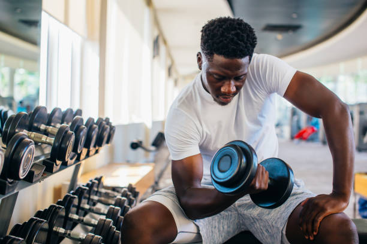

Track Your Health with Health Loop
Get Started Today!
Sign Up Log InKey Features
Health Loop is designed to help people track their health, stay motivated, and connect with others who share similar wellness goals.
- Track workouts and daily activity
- Monitor nutrition and hydration
- Set personal health goals
- Connect with a supportive health community
Feature Examples

Workout Tracking
Nutrition
Progress
Community Highlights
Our community members share their health journeys, tips, and motivation to help each other stay on track.
User Success Story
“Health Loop helped me lose 20 pounds and stay motivated. I love the challenges and support from others in the community.”
John D.
Progress
60% Complete